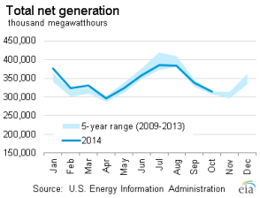
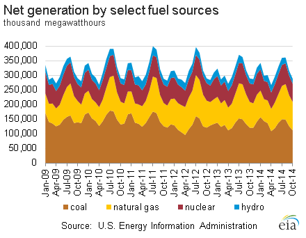
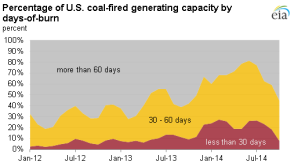
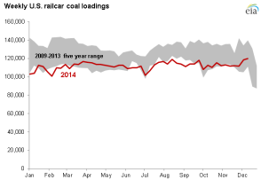

Electricity Monthly Update
With Data for October 2014 | Release Date: Dec. 23, 2014 | Next Release Date: Jan. 26, 2015
Previous Issues
Highlights: October 2014
- Coal stockpiles increased by over 12 million tons, the largest build since October 2011.
- October average revenues per kilowatthour rose 3.4% compared to last year, the 23rd consecutive month of year-over-year increases.
- Wholesale power prices fell below $30/MWh in the Northeast as wholesale natural gas prices fell well below $2/MMBtu.
Key Indicators
| October 2014 | % Change from October 2013 | |
|---|---|---|
| Total Net Generation (Thousand MWh) |
313,972 | -0.2% |
| Residential Retail Price (cents/kWh) |
12.58 | 2.2% |
| Retail Sales (Thousand MWh) |
293,052 | 0.4% |
| Heating Degree-Days | 221 | -14.0% |
| Cooling Degree-Days | 67 | 13.6% |
| Natural Gas Price, Henry Hub ($/MMBtu) |
3.89 | 2.8% |
| Natural Gas Consumption (Mcf) |
727,192 | 9.3% |
| Coal Consumption (Thousand Tons) |
61,390 | -7.5% |
| Coal Stocks (Thousand Tons) |
136,188 | -11.2% |
| Nuclear Generation (Thousand MWh) |
62,391 | -1.3% |


Electric power plant coal stockpile levels remain lower than in previous years
 Source: U.S. Energy Information Administration, Form EIA-923, Power Plant Operations Report
Source: U.S. Energy Information Administration, Form EIA-923, Power Plant Operations ReportCoal stockpiles at electric power plants totaled 136 million tons at the end of October, lower than in recent years for that month, though showing signs of improvement from earlier in the year. Stockpiles were drawn down significantly last winter because of increased electricity demand and rail delivery problems, and have remained at reduced levels due to continued congestion on the rail network.
Some coal plant operators, especially in parts of the Midwest, have expressed concern about the low level of coal inventories and have taken action in response. Operators have moved coal by truck instead of rail, purchased electricity from the wholesale market and reduced output in order to manage stockpiles. Power plant operators are hoping such conservation measures, milder weather than last winter and increased deliveries by rail will return coal stockpiles to desired levels as soon as possible. Another reason coal stockpiles may be lower industry-wide than in previous years is that a significant number of coal-fired unit retirements are expected next year and operators are likely reducing their stockpile levels in anticipation of shutdown.
Stockpiles can be viewed as the number of days a coal-fired unit could run under normal conditions given the amount of coal currently stockpiled at the facility. We call this calculated value days of burn. EIA groups coal plants into three days of burn categories: those with less than 30 days of burn, 30-60 days of burn and those with greater than 60 days of burn. EIA excludes from the days of burn calculations plants that rely on lignite or waste coal; these plants rely on coal from mine-mouth sources, either lignite mines or waste piles or ponds, and they do not maintain stockpiles comparable to those at other coal plants.
 Source: U.S. Energy Information Administration, Form EIA-923, Power Plant Operations ReportAt the end of October 2014, about 45% of coal capacity had less than 60 days of burn and 8% had less than 30 days of burn. This is a large improvement from June, when more than 81% of coal capacity had less than 60 days of burn and 26% of coal capacity had less than 30 days of burn.
 Source: U.S. Energy Information Administration, based on Association of American RailroadsAs noted above, rail transportation has been an area of concern for some power plant operators as they attempt to rebuild stockpile levels. Railroads faced weather-related issues last winter that curtailed deliveries and have also had to transport record grain harvests (up 13.4% this year), higher shipments of petroleum and petroleum products (up 13% this year) and a 5.2% increase in intermodal units (truck-to-rail, which alone accounts for nearly half of all U.S. rail traffic). In fact, total U.S. railcar loadings have increased in every traffic category tracked by the Association of American Railroads and is up 4.4% in total through mid-December compared to last year.
U.S. coal railcar loadings have remained near, or below, the five-year range throughout 2014. However, they have risen considerably since late November compared to last year. Coal loadings were up 5.6% for the week ending November 29, up 13% for the week ending December 6, and were up 7.8% for the week ending December 13 compared to the same weeks in 2013. Loadings for the week ending December 13 were also the highest of 2014. Cumulatively, coal railcar loadings are 0.7% above 2013 levels through mid-December.
Principal Contributor:
Tim Shear
(Tim.Shear@eia.gov)
End Use: October 2014
Retail rates/prices and consumption
In this section, we look at what electricity costs and how much is purchased. Charges for retail electric service are based primarily on rates approved by state regulators. However, a number of states have allowed retail marketers to compete to serve customers and these competitive retail suppliers offer electricity at a market-based price.
EIA does not directly collect retail electricity rates or prices. However, using data collected on retail sales revenues and volumes, we calculate average retail revenues per kWh as a proxy for retail rates and prices. Retail sales volumes are presented as a proxy for end-use electricity consumption.
Average revenue per kWh by state
October continued a trend of increasing revenue per kilowatthour averages across much of the country. Thirty-nine states and the District of Columbia were up, and just 11 states down, from last October. The largest year-over-year increases were seen in Rhode Island (up 19%), Illinois (up 14%), Alaska (up 10%) and and New Mexico (up 9.5%). The largest year-over-year decreases were found in Iowa, which was down 5%, and West Virginia, Vermont and Louisiana, all down between 2-3%.
Total average revenues per kilowatthour were 10.35 cents in October, 3.4% higher than last year. By sector, the commercial sector saw the largest increase, up 5.5% to 10.87 cents/kWh, with the residential and industrial sectors both increasing by 2.2%.
Total retail sales volumes totaled 293,052 GWh, up 0.4% from last October and down from September’s 323,157 GWh of total retail sales. The commercial, industrial and transportation sectors all had retail sales volumes increases, with residential the only sector with lower volumes than last year, down 1.1%.
Retail sales
October represents the height of the fall “shoulder� season, in-between the higher energy demand periods of the summer and winter. As such, weather tends to be fairly mild across the country and electricity demand is low. This October was no exception, with total U.S. net generation the lowest for any month in 2014.
Retail sales volumes were lower in 31 states and the District of Columbia compared to a year ago, with states showing increases largely centered in the South and West where temperatures were among the warmest on record for the month. The state with the highest year-over-year increase in retail sales volumes was North Dakota, up 13% as strong economic activity has led to strong electricity demand growth. Arizona (up 12%), California (up 9%), Oklahoma and Nevada (both up nearly 5%) were among many states that had one of their warmest Octobers on record.
Oregon had the largest decline in retail sales volumes of any state, down 5% from a year ago, followed by Illinois, Missouri and Maryland, all down 4-5%.
Heating degree days (HDDs) were down, and down a lot, across most of the country in October. In fact, nearly every state in New England and from the Rockies to the Pacific Ocean experienced one of the 10 warmest Octobers in that states’ 120 years of recorded weather data. Many other states in the Plains and the Southeast experienced a top-25 warmest October. Only in the Great Lakes region were temperatures closer to normal, with heating degree days higher compared to October 2013, though even there only Wisconsin, Illinois and Iowa were cooler than normal for the month.
Resource Use: October 2014
Supply and fuel consumption
In this section, we look at the resources used to produce electricity. Generating units are chosen to run primarily on their operating costs, of which fuel costs account for the lion's share. Therefore, we present below, electricity generation output by fuel type and generator type. Since the generator/fuel mix of utilities varies significantly by region, we also present generation output by region.
Generation output by region
In October 2014, net generation in the United States decreased 0.2% compared to the previous October, a small change that does not necessarily reflect the large difference in temperatures between the two months. While last October had below-normal temperatures, this year the continental United States experienced its fourth-warmest October on record, thanks to average temperatures that were significantly above average in the western half of the country and in most of the Northeast.
The above-average temperatures this October led to both a decrease in residential heating demand in the cooler parts of the country (where residents would usually be heating their homes at this time of year) and an increase in residential cooling demand in the warmer parts of the country (where residents may still be cooling their homes), as evidenced by the 14% decrease in population-weighted heating degree-days and 13.6% increase in cooling degree-days. At the regional level, Texas, the West, Florida, and the Northeast regions saw an increase in electricity generation compared to October 2013, while the Mid-Atlantic, Central, and Southeast regions saw decreases.
Compared to the previous October, across the board, coal generation was down while natural gas generation was up. Changes in nuclear generation were more mixed, with Florida, the Southeast, and Mid-Atlantic regions seeing more nuclear generation this October, while the Central, West, Northeast regions, and Texas saw less.
Fossil fuel consumption by region
The chart above compares coal consumption in October 2013 and October 2014 by region and shows that the decrease in coal consumption mirrored the decrease in electricity generation from coal in every region.
The second tab compares natural gas consumption by region. This consumption pattern mostly mirrored the change in electricity generation from natural gas, with the Western region having the largest percentage increase (16%) in natural gas consumption.
The third tab presents the change in the relative share of fossil fuel consumption by fuel type on a percentage basis, calculated using equivalent energy content (Btu). This highlights changes in the relative market shares of coal, natural gas, and petroleum. Florida was the only part of the country where coal and natural gas both showed a very slight increase in relative market share because of a drop in petroleum consumption. All other regions saw natural gas increase its relative market share at the expense of coal, with the Western region having the largest shift from coal to natural gas from October 2013 to October 2014.
The fourth tab presents the change in coal and natural gas consumption on an energy content basis by region. Once again, the changes in total coal and natural gas consumption were very similar to the changes seen in total coal and natural gas net generation in each region.
Fossil fuel prices
To gain some insight into the changing pattern of consumption of fossil fuels over the past year, we look at relative monthly average fuel prices. A common way to compare fuel prices is on an equivalent $/MMBtu basis as shown in the chart above. The price of natural gas at Henry Hub decreased from the previous month, going from $4.04/MMBtu in September 2014 to $3.89/MMBtu in October 2014. The natural gas price for New York City (Transco Zone 6 NY) decreased for the ninth consecutive month, going from $2.30/MMBtu in September 2014 to $2.21/MMBtu in October 2014. Like many natural gas prices in the Northeast, the New York City natural gas price is now well below the price of natural gas at Henry Hub. This is mainly due to the growth of natural gas coming out of the Marcellus region and a slight increase in pipeline capacity to the Northeast.
For the third consecutive month, the New York Harbor residual oil price decreased from the previous month, going from $16.34/MMBtu in September 2014 to $14.62/MMBtu in October 2014. Regardless, oil used as a fuel for electricity generation is almost always priced out of the market.
A fuel price comparison based on equivalent energy content ($/MMBtu) does not reflect differences in energy conversion efficiency (heat rate) among different types of generators. Gas-fired combined-cycle units tend to be more efficient than coal-fired steam units. The second tab shows coal and natural gas prices on an equivalent energy content and efficiency basis. The spread between the Henry Hub natural gas price and the price of Central Appalachian coal on a $/MWh basis decreased only slightly compared to last month. However, because of the continued decrease in the New York City natural gas price, the price of Central Appalachian coal on a $/MWh basis continues to be higher than the New York City natural gas price.
The conversion shown in this chart is done for illustrative purposes only. The competition between coal and natural gas to produce electricity is more complex. It involves delivered prices and emission costs, the terms of fuel supply contracts and the workings of fuel markets.
Regional Wholesale Markets: October 2014
The United States has many regional wholesale electricity markets. Below we look at monthly and annual ranges of on-peak, daily wholesale prices at selected pricing locations and daily peak demand for selected electricity systems in the Nation. The range of daily prices and demand data is shown for the report month and for the year ending with the report month.
Prices and demand are shown for six Regional Transmission Operator (RTO) markets: ISO New England (ISO-NE), New York ISO (NYISO), PJM Interconnection (PJM), Midwest ISO (MISO), Electric Reliability Council of Texas (ERCOT), and two locations in the California ISO (CAISO). Also shown are wholesale prices at trading hubs in Louisiana (into Entergy), Southwest (Palo Verde) and Northwest (Mid-Columbia). In addition to the RTO systems, peak demand is also shown for the Southern Company, Progress Florida, Tucson Electric, and the Bonneville Power Authority (BPA). Refer to the map tabs for the locations of the electricity and natural gas pricing hubs and the electric systems for which peak demand ranges are shown.
In the second tab immediately below, we show monthly and annual ranges of on-peak, daily wholesale natural gas prices at selected pricing locations in the United States. The range of daily natural gas prices is shown for the same month and year as the electricity price range chart. Wholesale electricity prices are closely tied to wholesale natural gas prices in all but the center of the country. Therefore, one can often explain current wholesale electricity prices by looking at what is happening with natural gas prices.
Wholesale prices
In October, wholesale electricity and natural gas prices traded in a narrow band near the bottom of the twelve-month range. Texas (ERCOT) was the only region where electricity prices moved significantly above the lows for the month, reaching $93/MWh on October 7. That Tuesday was the first day of a weeklong late season heat wave, with temperatures exceeding 90 degrees four days straight. Peak loads in ERCOT exceeded 57.5 GW on the 7th and peaked above 54 GW for the next three days until dropping to a 36.7 GW daily peak on Saturday the 11th due to cooler weather and decreased weekend electricity demand. In the Northeast, prices in New England (ISONE), New York State (NYISO) and the Mid-Atlantic (PJM) came within $1/MWh of annual lows as shoulder season demand bottomed out and natural gas prices reached very low prices.
Natural gas prices in New England (Algonquin), New York City (Transco Z6 NY) and the Mid-Atlantic (Tetco M-3) reached 12-month lows in October, dipping to $1.67/MMBtu at Algonquin, $1.43/MMBtu at Transco Z6 NY and $1.42/MMBtu at Tetco M-3. These low prices will not persist however, as cold winter weather, high natural gas demand and constrained pipelines normally result in the highest prices in the nation for these areas.
Electricity system daily peak demand

{kind=link}
{kind=link}
{kind=link}
{kind=link}
{kind=link}
{kind=link}
{kind=link}
{kind=link}
{kind=link}
{kind=link}
{kind=link}
Daily peak electricity system demand levels were much lower in October compared to last month, when most regions were at or near their 12-month highs. Texas (ERCOT) was the only region to exceed 75% of its all-time peak demand during the month as warmer temperatures in the beginning of the month resulted in increased electricity demand. Unlike Texas, warmer temperatures in the Northeast at this time of year lead to decreased electricity demand, with New England (ISONE), New York State (NYISO) and the Mid-Atlantic (PJM) regions all having peak demand levels near 12-month lows and maxing out below 62% of their all-time peaks. Bonneville Power Administration in the Pacific Northwest also experienced very low demand, setting a 12-month low and reaching only 57% of its all-time peak during the month.
Electric Power Sector Coal Stocks: October 2014
In October, total U.S. coal stockpiles increased by almost 10%, or just over 12 million tons, to 136 million tons. This is the largest month-to-month percentage increase since at least January 2009. In absolute terms, this was the largest build since 12.5 million tons were added in October 2011. The increase was split evenly between bituminous and subbituminous coal types, which both increased by nearly six million tons. The build in subbituminous stocks was the largest in percentage terms going back to at least January 2009 and the largest in absolute terms since 6.1 million tons were added in January 2012.
The increase in coal stockpiles this month follows the normal pattern of building stocks during a shoulder month before winter though the magnitude of the increase, one of the largest in many years, is a welcome sign given the concern expressed this year in regards to low stockpile levels. In the Midwest, stockpiles at many coal-fired generators were rapidly depleted last winter as a result of increased electricity demand and rail delivery problems. This caused some power plant operators to enact conservation measures by lowering output or idling units, buying replacement power on the wholesale market and re-routing deliveries from one plant to another in order to manage stockpiles. Railroad operator BNSF has also been called on to increase coal deliveries to power plants, as this problem has centered on subbituminous coal deliveries from the Powder River Basin across BNSF rail lines.
Days of burn
The average number of days of burn held at electric power plants is a forward looking estimate of coal supply given a power plant's current stockpile and past consumption patterns. Like total stockpile levels, days of burn estimates increased in October. Days of burn at bituminous units increased from 81 to 82 days in October while days of burn at subbituminous units increased from 46 to 50 days of burn, on average, though these numbers remain below last October. The percentage of bituminous and subbituminous coal-fired capacity having less than 30 days of burn fell from 18% to under 8% and the capacity with 30 to 60 days of burn fell from 41% to 37% in October.
Coal stocks and average number of days of burn for non-lignite coal by region (electric power sector)
| October 2014 | October 2013 | September 2014 | ||||||||
|---|---|---|---|---|---|---|---|---|---|---|
| Zone | Coal | Stocks (1000 tons) | Days of Burn | Stocks (1000 tons) | Days of Burn | % Change of Stocks | Stocks (1000 tons) | Days of Burn | % Change of Stocks | |
| Northeast | Bituminous | 7,335 | 83 | 5,614 | 53 | 30.7% | 6,819 | 88 | 7.6% | |
| Subbituminous | 605 | 117 | 560 | 69 | 8.0% | 553 | 133 | 9.3% | ||
| South | Bituminous | 37,118 | 85 | 44,707 | 87 | -17.0% | 33,309 | 86 | 11.4% | |
| Subbituminous | 6,699 | 74 | 6,184 | 64 | 8.3% | 6,324 | 69 | 5.9% | ||
| Midwest | Bituminous | 14,592 | 74 | 14,808 | 67 | -1.5% | 13,142 | 69 | 11.0% | |
| Subbituminous | 28,254 | 47 | 33,506 | 53 | -15.7% | 25,024 | 42 | 12.9% | ||
| West | Bituminous | 4,963 | 88 | 6,043 | 101 | -17.9% | 4,597 | 82 | 7.9% | |
| Subbituminous | 19,949 | 49 | 27,806 | 63 | -28.3% | 18,362 | 47 | 8.6% | ||
| U.S. Total | Bituminous | 64,007 | 82 | 71,172 | 79 | -10.1% | 57,867 | 81 | 10.6% | |
| Subbituminous | 55,507 | 50 | 68,056 | 58 | -18.4% | 50,263 | 46 | 10.4% | ||
Source: U.S. Energy Information Administration
NOTE: Stockpile levels shown above reflect a sample of electric power sector plants, which were used to create the days of burn statistics. These levels will not equal total electric power sector stockpile levels.
Methodology and Documentation
General
The Electricity Monthly Update is prepared by the Electric Power Operations Team, Office of Electricity, Renewables and Uranium Statistics, U.S. Energy Information Administration (EIA), U.S. Department of Energy. Data published in the Electricity Monthly Update are compiled from the following sources: U.S. Energy Information Administration, Form EIA-826,“Monthly Electric Utility Sales and Revenues with State Distributions Report,” U.S. Energy Information Administration, Form EIA-923, "Power Plant Operations Report," fuel spot prices from Bloomberg Energy, electric power prices from SNL Energy, electric system demand data from Ventyx Energy Velocity Suite, and weather data and imagery from the National Oceanic and Atmospheric Administration.
The survey data are collected monthly using multiple-attribute cutoff sampling of power plants and electric retailers for the purpose of estimation for various data elements (generation, stocks, revenue, etc.), for various categories, such as geographic regions. (The data elements and categories are “attributes.”) The nominal sample sizes are: for the Form EIA-826, approximately 450 electric utilities and other energy service providers; for the Form EIA-923, approximately 1900 plants. Regression-based (i.e., “prediction”) methodologies are used to estimate totals from the sample. Essentially complete samples are collected for the Electric Power Monthly (EPM), which includes State-level values. The Electricity Monthly Update is based on an incomplete sample and includes only regional estimates and ranges for state values where applicable. Using ‘prediction,’ it is generally possible to make estimates based on the incomplete EPM sample, and still estimate variances.
For complete documentation on EIA monthly electric data collection and estimation, see the Technical Notes to the Electric Power Monthly. Values displayed in the Electric Monthly Update may differ from values published in the Electric Power Monthly due to the additional data collection and data revisions that may occur between the releases of these two publications.
Accessing the data: The data included in most graphics can be downloaded via the "Download the data" icon above the navigation pane.Some missing data is proprietary and non-public.
Key Indicators
The Key Indicators table, located in the "Highlights" section, are defined below. The current month column includes data for the current month at a national level. The units vary by statistic, but are included in the table. The "% Change from 2010" value is the current month divided by the corresponding month last year (e.g. July 2011 divided by July 2010). This is true for Total Generation, Residential Retail Price, Retail Sales, Cooling Degree Days, Coal Stocks, Coal and Natural Gas Consumption. The Henry Hub current month value is the average weekday price for the current month. The Henry Hub "% Change from 2010" value is the average weekday price of the same month from 2010 divided by the average weekday price of the current month.
Total Net Generation: Reflects the total electric net generation for all reporting sectors as collected via the Form EIA-923.
Residential Retail Price: Reflects the average retail price as collected via the Form EIA-826.
Retail Sales: Reflects the reported volume of electricity delivered as collected via the Form EIA-826.
Cooling Degree Days: Reflects the total population weighted U.S. degree days as reported by the National Oceanic and Atmospheric Administration.
Natural Gas Henry Hub: Reflects the average price of natural gas at Henry Hub for the month. This data is provided by Bloomberg.
Coal Stocks: Reflects the total coal stocks for the Electric Power Sector as collected via the Form EIA-923.
Coal Consumption: Reflects the total coal consumption as collected via the Form EIA-923.
Natural Gas Consumption: Reflects the total natural gas consumption as collected via the Form EIA-923.
Nuclear Outages: Reflects the average daily outage amount for the month as reported by the Nuclear Regulatory Commission's Power Reactor Status Report and the latest net summer capacity data collected on the EIA-860 Annual Generator Report.
Sector Definitions
The Electric Power Sector comprises electricity-only and combined heat and power (CHP) plants within the North American Industrial Classification System 22 category whose primary business is to sell electricity, or electricity and heat, to the public (i.e., electric utility plants and Independent Power Producers (IPP), including IPP plants that operate as CHP). The All Sectors totals include the Electric Power Sector and the Commercial and Industrial sectors (Commercial and Industrial power producers are primarily CHP plants).
Degree Days
Degree-days are relative measurements of outdoor air temperature used as an index for heating and cooling energy requirements. Heating degree-days are the number of degrees that the daily average temperature falls below 65° F. Cooling degree-days are the number of degrees that the daily average temperature rises above 65° F. The daily average temperature is the mean of the maximum and minimum temperatures in a 24-hour period. For example, a weather station recording an average daily temperature of 40° F would report 25 heating degree-days for that day (and 0 cooling degree-days). If a weather station recorded an average daily temperature of 78° F, cooling degree-days for that station would be 13 (and 0 heating degree days).
Per Capita Retail Sales
The per capita retail sales statistics use 2011 population estimates from the U.S. Census Bureau and monthly data collected by the Energy Information Administration. The volume of electricity delivered to end users for all sectors in kilowatthours is divided by the 2011 population estimate for each state.
Composition of Fuel Categories
Net generation statistics are grouped according to regions (see Electricity Monthly Update Explained Section) by generator type and fuel type. Generator type categories include:
Fossil Steam: Steam turbines powered by the combustion of fossil fuels
Combined Cycle: Combined cycle generation powered by natural gas, petroluem, landfill gas, or other miscellaneous energy sources
Other Fossil: Simple cycle gas turbines, internal combusion turbines and other fossil powered technology
Nuclear Steam: Steam turbines at operating nuclear power plants
Hydroelectric: Conventional hydroelectric turbines
Wind: Wind turbines
Other renewables: All other generation from renewable sources such as geothermal, solar, or biomass
Other: Any other generation technology, including hydroelectric pumped storage
Generation statistics are also displayed by fuel type. These include:
Coal: all generation associated with the consumption of coal
Natural Gas: all generation associated with the consumption of natural gas
Nuclear: all generation associated with nuclear power plants
Hydroelectric: all generation associated with conventional hydroelectric turbines
Other Renewable: all generation associated with wind, solar, biomass, and geothermal energy sources
Other Fossil: all generation associated with petroleum products and fossil-dervied fuels
Other: all other energy sources including waste heat, hydroelectric pumped storage, other reported sources
Relative Fossil Fuel Prices
Relative fossil fuel prices are daily averages of fossil fuel prices by month, displayed in dollars per million British thermal unit as well as adjusted for operating efficiency at electric power plants to convert to dollars per megawatthour. Average national heat rates for typical operating units for 2010 were used to convert relative fossil fuel prices.
Average Days of Burn
Average Days of Burn is defined as the average number of days remaining until coal stocks reach zero if no further deliveries of coal are made. These data have been calculated using only the population of coal plants present in the monthly Form EIA-923. This includes 1) coal plants that have generators with a primary fuel of bituminous coal (including anthracite) or subbituminous, and 2) are in the Electric Power Sector (as defined in the above "Sector definitions"). Excluded are plants with primary fuel of lignite and waste coal, mine mouth plants, and out of service plants. Coal storage terminals and the related plants that they serve are aggregated into one entity for the calculation of Average Days of Burn, as are plants that share stockpiles.
Average days of burn is computed as follows: End of month stocks for the current (data) month, divided by the average burn per day. Average burn per day is the average of the three previous years’ consumption as reported on the Form EIA-923.
These data are displayed by coal rank and by zone. Each zone has been formed by combining the following Census Divisions:
- "Northeast" — New England, Middle Atlantic
- "South" — South Atlantic, East South Central
- "Midwest" — West North Central, East North Central
- "West" — Mountain, West South Central, Pacific Contiguous
Coal Stocks vs. Days of Burn Stocks
The coal stocks data presented at the top of the Fossil Fuel Stocks section (“Coal Stocks”) will differ from the coal stocks presented in the Days of Burn section (“DOB Stocks”) at the bottom of the Fossil Fuel Stocks section. This occurs because Coal Stocks include the entire population of coal plants that report on both the annual and monthly Form EIA-923. The DOB Stocks only include coal plants that report on the monthly Form EIA-923 and have a primary fuel of bituminous (including anthracite) or subbituminous as reported on the Form EIA-860.